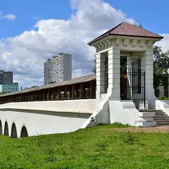
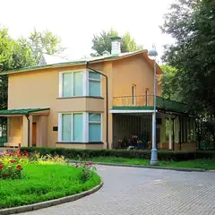
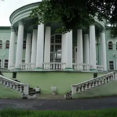
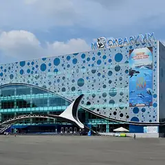
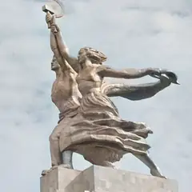

У метро · СВАО
Куда сходить у метро «ВДНХ»
Для 14 мест из нашего каталога ближайшая станция — «ВДНХ» (СВАО): 3 развлечения, 3 музея, 2 культурных места и 2 ресторана или кафе. Например, «Музей космонавтики», «Ростокинский акведук» и «ВДНХ». Недорогих, примерно до 1 500 ₽ на человека, — 7. 11 готовых планов проходят через эту станцию — например, «Акведук в сумерках и хоррор-квест», с маршрутом пешком между точками.
- 14 мест
- 11 планов
Места у метро «ВДНХ» 13
пр. Мира, 111
Под монументом «Покорителям космоса»: настоящие спускаемые аппараты, скафандры и макет станции «Мир».
Подробнее и маршрут: Музей космонавтикиПозвать сюда: Музей космонавтики
Фото: Музей космонавтики, CC0 · Wikimedia Commons

Ростокинский акведук, просп. Мира
Каменный акведук 1780-х годов над Яузой — одно из старейших инженерных сооружений Москвы.
Подробнее и маршрут: Ростокинский акведукПозвать сюда: Ростокинский акведук
Фото: Dmitry Ivanov., CC BY-SA 4.0 · Wikimedia Commons
пр. Мира, 119
Фонтан «Дружба народов», павильоны и аллеи — гулять можно часами.
Подробнее и маршрут: ВДНХПозвать сюда: ВДНХ
Фото: Alexxx1979, CC BY-SA 4.0 · Wikimedia Commons

1-я Останкинская ул., 28
Дом конструктора Королёва у ВДНХ — филиал Музея космонавтики.
Подробнее и маршрут: Дом-музей КоролёваПозвать сюда: Дом-музей Королёва
Фото: Vladimir OKC, CC BY-SA 3.0 · Wikimedia Commons

ВДНХ, просп. Мира, 119
Летняя сцена ВДНХ под открытым небом: концерты и кино.
Подробнее и маршрут: Зелёный театр ВДНХПозвать сюда: Зелёный театр ВДНХ
Фото: Volchonock, CC BY-SA 3.0 · Wikimedia Commons

пр. Мира, 119, стр. 23
Акулы, скаты и тоннель под водой. Открыт 10:00–22:00, вход до 21:00, билет от 1 400 ₽.
Подробнее и маршрут: МосквариумПозвать сюда: Москвариум
Фото: Dmitry Ivanov., CC BY-SA 4.0 · Wikimedia Commons

просп. Мира, 123Б
Знаменитая скульптура Мухиной у ВДНХ; в павильоне-постаменте проходят выставки.
Подробнее и маршрут: Рабочий и колхозницаПозвать сюда: Рабочий и колхозница
Фото: Willem van de Poll, CC0 · Wikimedia Commons
просп. Мира, 119, стр. 66А
Новое
Павильон ВДНХ, где собраны кухни регионов России: можно попробовать карельский суп с форелью и калитки. Места много — удобно пообедать после прогулки по выставке.
Подробнее и маршрут: Дом российской кухниПозвать сюда: Дом российской кухни
ул. Бориса Галушкина, 17
Новое
Одни из самых популярных хоррор-квестов Москвы: неоновая «Ночь в Токио», «Пожиратель душ», «Король шутов». Сильные актёры и декорации, от 6500 ₽.
просп. Мира, 109
Новое
Кинотеатр 1964 года у ВДНХ: большой зал почти на 500 мест с гигантским экраном и крошечный зал на 20 мест с пуфами. Ретроспективы, фестивали и недорогие билеты.
Подробнее и маршрут: Москино КосмосПозвать сюда: Москино Космос
Ярославская ул., 12, стр. 1
Новое
Спа у ВДНХ с джакузи под открытым небом, пихтовым хаммамом и японской баней полного цикла. Есть программы для двоих и спа-девичники. 10–22.
пр. Мира, 119, стр. 56
Фудхолл братьев Васильчуков на ВДНХ: гирос, фо, бургеры, пицца и бар. 11–23.
пр. Мира, 119, стр. 47
Кендлбар на ВДНХ: за час делаете свечу из соевого воска, 30+ ароматов. 11–21.


Готовые планы 11
- Ростокинский акведук · Акведук XVIII века · м. ВДНХ
- 12 минут пешкомИнкубо · Квест с актёрами
В сумерках пройти вдоль каменного Ростокинского акведука 1780-х, а потом хоррор в «Инкубо» — «Пожиратель душ» или неоновая «Ночь в Токио» с сильными актёрами.
Открыть план: Акведук в сумерках и хоррор-квестПозвать сюда: Акведук в сумерках и хоррор-квест
Фото: Dmitry Ivanov., CC BY-SA 4.0 · Wikimedia Commons
- Музей космонавтики · Музей · м. ВДНХ
- 9 минут пешкомМоскино Космос · Кинотеатр
Спускаемые аппараты и скафандры под монументом «Покорителям космоса», а потом сеанс в кинотеатре «Космос» 1964 года — на огромном экране или в крошечном зале с пуфами. Билеты недорогие.
Открыть план: Музей космонавтики и кино в «Космосе»Позвать сюда: Музей космонавтики и кино в «Космосе»
Фото: Музей космонавтики, CC0 · Wikimedia Commons
- Останкинская башня · Смотровая площадка · м. Бутырская
- 21 минута пешкомДом-музей Королёва · Музей
- 9 минут пешкомМузей космонавтики · Музей
Город с 337 метров со стеклянным полом (возьмите паспорт), потом минут двадцать прогулкой до дома, где жил конструктор Сергей Королёв, а оттуда меньше десяти минут до Музея космонавтики с настоящими спускаемыми аппаратами.
Открыть план: Башня и космосПозвать сюда: Башня и космос
Фото: Klodklodklod77, CC BY-SA 4.0 · Wikimedia Commons
- Музей космонавтики · Музей · м. ВДНХ
- 12 минут пешкомColizeum ВДНХ · Компьютерный клуб
Музей космонавтики под монументом «Покорителям космоса», а потом круглосуточный Colizeum в двенадцати минутах пешком: можно засидеться до утра.
Открыть план: Космос днём, катка ночьюПозвать сюда: Космос днём, катка ночью
Фото: Музей космонавтики, CC0 · Wikimedia Commons
- Музей космонавтики · Музей · м. ВДНХ
- 16 минут пешкомВДНХ · Парк
Настоящие спускаемые аппараты, скафандры и макет станции «Мир» в музее под монументом, а потом прогулка по ВДНХ к фонтану «Дружба народов».
Открыть план: Космос и ВДНХПозвать сюда: Космос и ВДНХ
Фото: Музей космонавтики, CC0 · Wikimedia Commons
- Москвариум · Океанариум · м. ВДНХ
- 16 минут пешкомВДНХ · Парк
Акулы и подводный тоннель, а потом прогулка по аллеям ВДНХ к фонтану «Дружба народов».
Открыть план: Океанариум и фонтаны ВДНХПозвать сюда: Океанариум и фонтаны ВДНХ
Фото: Dmitry Ivanov., CC BY-SA 4.0 · Wikimedia Commons
- Ростокинский акведук · Акведук XVIII века · м. ВДНХ
Каменный акведук XVIII века над Яузой — красивее всего на закате.
Открыть план: Акведук над ЯузойПозвать сюда: Акведук над Яузой
Фото: Dmitry Ivanov., CC BY-SA 4.0 · Wikimedia Commons
- SkyTown · Верёвочный парк · м. Ботанический сад
- 16 минут пешкомДом российской кухни · Фудхолл на ВДНХ
Два часа на верёвочной башне SkyTown высотой до 16 метров — маршрут выбираете сами, — а потом обед в Доме российской кухни: карельский суп с форелью и калитки.
Открыть план: Верёвочная башня и обед на ВДНХПозвать сюда: Верёвочная башня и обед на ВДНХ
- Павильон «Атом» · Музей · м. Ботанический сад
- 9 минут пешкомРестомаркет · Фудхолл
Один из самых зрелищных павильонов ВДНХ, а потом девять минут пешком до Рестомаркета: гирос, фо и бургеры.
Открыть план: Павильон «Атом» и РестомаркетПозвать сюда: Павильон «Атом» и Рестомаркет
- Rewax Lab · Мастерская свечей · м. ВДНХ
- 19 минут пешкомCafeteria de Madre · Пекарня
Каждая делает ароматическую свечу на свой вкус, а потом булки и кофе в павильоне «Хлебопродукты».
Открыть план: Свечи на ВДНХ и пекарняПозвать сюда: Свечи на ВДНХ и пекарня
- Ego Spa · Спа · м. ВДНХ
Джакузи под открытым небом, пихтовый хаммам и японская баня полного цикла: программа для двоих в Ego Spa — подарок на годовщину, который не пылится на полке.
Открыть план: Спа на двоих у ВДНХПозвать сюда: Спа на двоих у ВДНХ

Компьютерные клубы 1
ул. Космонавтов, 6, подъезд 3
Круглосуточно
Круглосуточный Colizeum в паре минут от ВДНХ: днём — Космос и павильоны, вечером — катки до утра.
Подробнее и маршрут: Colizeum ВДНХПозвать сюда: Colizeum ВДНХ
Как позвать
- Выбери план, место или событие — в карточке адрес, цены и маршрут в Яндекс Картах.
- Нажми «Позвать сюда» — соберётся приглашение-игра для свидания или голосование для компании.
- Отправь ссылку в любой мессенджер: тебе ответят, а компания отметит, куда и когда может. Бесплатно и без регистрации.